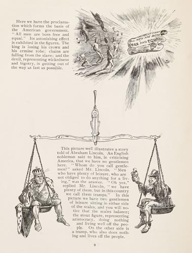

|  |
Here we have the proclamation which forms the fasis of the American government. "All men are born free and equal." Its astonishing effect is exhibited in the figures. The king is losing his crown and his ermine robe; chains are falling from the slave; and the devil, representing wickedness and bigotry, is getting out of the way as fast as possible. This picture illustrates a story told of Abraham Lincoln. An English nobleman said to him, in criticising America, that we have no gentlemen here. "Whom do you call gentlemen?" asked Lincoln. "Men who have plenty of leisure, who are not obliged to do anything for a living," was the answer. "Oh yes," replied Mr. Lincoln, we have plenty of them, but in this country we call them tramps." In this picture we have two gentlemen of leisure sitting in either side of the scales, and you will notice that the scales balance; the stout figure, representing aristocracy, doing nothing and living well off the people. On the other side is a tramp, who also does nothing and lives off the people. |